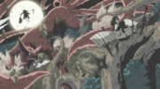

Uchiha Madara

Madara Uchiha (うちはマダラ, Uchiha Madara) was the legendary leader of the Uchiha clan. He founded Konohagakure alongside his childhood friend and rival, Hashirama Senju, with the intention of beginning an era of peace. When the two couldn't agree on how to achieve that peace, they fought for control of the village, a conflict which ended in Madara's death. Madara, however, rewrote his death and went into hiding to work on his own plans. Unable to complete it in his natural life, he entrusted his knowledge and plans to Obito Uchiha shortly before his actual death. Years later, Madara would be revived, only to see his plans foiled and ultimately, and finally, realising the error of his ways and making amends with Hashirama before his final death.
Background
Madara was born during the Warring States Period, and was the eldest of Tajima Uchiha's five sons.Madara and his brothers grew up on the battlefield waging constant war with the Uchiha's rivals: the Senju. Three of his brothers died young, leaving Madara with only his younger brother, Izuna. Madara and Izuna became very close through their shared loss and constantly competed with each other to get stronger.This, combined with his naturally strong chakra, enabled the young Madara to defeat adult Senju in battle and develop a reputation as a genius.
During his infrequent downtime, Madara met a boy his own age named Hashirama. The two quickly developed a friendly rivalry, be it skipping stones or urinating in rivers. Like Madara, Hashirama was also a shinobi who had lost his brothers on the battlefield. Together they imagined a world where children like themselves wouldn't need to fight.[9] As a precaution, Madara and Hashirama did not divulge their family names, but nevertheless discovered each other's identities: Madara was an Uchiha, Hashirama was a Senju; it was their duty to kill each other, even if they were friends. Needing to choose between his family and his dreams of peace, Madara chose to end his friendship with Hashirama so he would have no reservations over killing him in the future, a resolve strong enough to awaken his Sharingan.
Over the following years Madara and Hashirama continued to meet in combat. Madara could never defeat Hashirama — even after acquiring a Mangekyō Sharingan — and Hashirama could never bring himself to kill someone he still considered a friend, resulting in a constant stalemate between the two that lasted decades. In time, both Madara and Hashirama became leaders of their respective clans, a position Hashirama tried to use to broker peace between them.Although some Uchiha found the offer increasingly tempting, Madara refused due to Izuna's death at the hands of Hashirama's own brother, Tobirama. Despite this, some Uchiha defected over to the Senju clan out of self-preservation. Madara then used Izuna's eyes in order to gain "eternal" Mangekyō Sharingan and restore his deteriorating vision. With this new power he waged one final assault against the Senju and was summarily defeated. Rather than kill Madara to bring the era of war to an end, Hashirama offered to kill himself if it would stop the fighting. Madara was moved by Hashirama's gesture and finally assented to peace.
 The Senju, the Uchiha, and all their affiliated clans came together to found a village of peace, where children would never need to die in battle. Madara and Hashirama, rekindling their childhood friendship, and Madara called that village Konohagakure, seeing it through leaves.But Madara's idea of peace differed from Hashirama's: where Hashirama envisioned cooperation with the other newly-formed villages, Madara desired control so the peace could never be lost, evidenced by his attacking Iwagakure's Mū and Ōnoki so that they would submit to Konoha's authority.When Hashirama was elected as Hokage, Konoha's leader, Madara also became concerned for the Uchiha's future, believing this to be but the first step in the Senju's dominance.
The Senju, the Uchiha, and all their affiliated clans came together to found a village of peace, where children would never need to die in battle. Madara and Hashirama, rekindling their childhood friendship, and Madara called that village Konohagakure, seeing it through leaves.But Madara's idea of peace differed from Hashirama's: where Hashirama envisioned cooperation with the other newly-formed villages, Madara desired control so the peace could never be lost, evidenced by his attacking Iwagakure's Mū and Ōnoki so that they would submit to Konoha's authority.When Hashirama was elected as Hokage, Konoha's leader, Madara also became concerned for the Uchiha's future, believing this to be but the first step in the Senju's dominance.
The Stone Tablet had been in the Uchiha's possession for generations and was brought with them when they settled in Konoha. Through careful study, Madara was able to decipher enough of it to learn of the history of shinobi: of the endless cycle of failed peace and the destiny of battle between Uchiha and Senju, but also a means of unity for the world.With this knowledge, Madara decided Konoha was a failed experiment. He tried to convince his own clan and even Hashirama of the same conclusion, but none would hear him. Madara chose to abandon the village, returning with the Nine-Tailed Demon Fox under his control to challenge Hashirama.They fought to exhaustion, and from the carnage of their battle the Valley of the End was formed.In the end, Madara was killed by Hashirama.
Personality
Madara's childhood was a product of the times he lived in: the constant fighting made him a perfectionist that would keep at something until he mastered it, and his triumphs on the battlefield made him very confident in his abilities and talent.Whenever one of these personality traits was challenged, as they tended to be by Hashirama, Madara's competitive streak would emerge. Madara did not mind Hashirama's influence in this regard; he believed that the only way to survive in the shinobi world was to make allies with one's enemies.His exposure to Hashirama is credited for Madara not experiencing the Uchiha's "Curse of Hatred" or at the very least, not being victimised by it as much as Izuna was and even though he claimed to have abandoned his friendship with Hashirama, Madara still held onto their friendship subconsciously.Madara's actions and beliefs were singularly focused on protecting Izuna, his only surviving brother.So long as he had Izuna, Madara was reasonable and kind, willing to make concessions for a perceived greater good.
 Madara changed after Izuna's death, becoming bitter towards the Senju, particularly Hashirama since he still had a brother. Embracing his clan's Curse of Hatred, he opted to die for revenge rather than compromise or forgive.Although he was briefly convinced to set aside his grief and try to replace Izuna with the collective family of Konoha, he could never shake the feeling that he was betraying Izuna's memory. The increasing isolation of himself and other Uchiha from village politics ultimately convinced him of this, causing him to fully break with any other attachments.
Madara changed after Izuna's death, becoming bitter towards the Senju, particularly Hashirama since he still had a brother. Embracing his clan's Curse of Hatred, he opted to die for revenge rather than compromise or forgive.Although he was briefly convinced to set aside his grief and try to replace Izuna with the collective family of Konoha, he could never shake the feeling that he was betraying Izuna's memory. The increasing isolation of himself and other Uchiha from village politics ultimately convinced him of this, causing him to fully break with any other attachments.
During his time as a Konoha shinobi, Madara did what he thought was in the village's best interests. Unlike Hashirama's compassionate methods, Madara took a merciless approach: the shinobi of Iwagakure only had purpose so long as they swore unwavering allegiance to Konoha.Since their methods were so different, Madara hated to hear Hashirama's name during diplomatic discussions. After his defection from Konoha, Madara's priorities became centred around the Eye of the Moon Plan, manipulating countless others in order to satisfy his own goals and putting in place multiple layers of contingencies so that nobody could ever diverge from his own intentions. Despite this, Madara genuinely believed this plan would in fact, benefit the world and simply followed an "ends justifies the means" principle.
As he valued only power and possessed so much of it, Madara therefore disliked to waste it on unworthy causes or unchallenging opponents, claiming disgust when he was forced to.
Madara loved fighting above all else: the sights, the sounds, even the taste of his own blood;he felt being reincarnated deprived him of the full experience. Yet he was very disciplined in a fight, never allowing his failed plans or attacks to upset him, never letting superior numbers or power intimidate him, and always willing to do whatever must be done to gain victory. Although he sometimes imposed limitations on himself, such as not using certain techniques more than once, he was willing to "lower" himself with unbecoming tactics or excessive displays in order to change tactics and exploit advantages. He was perfectly aware of his talents and did not feign modesty, bluntly stating when he was stronger than his opponents and belittling them when they continued to defy him. Conversely, if he was proven wrong or somebody posed a legitimate challenge to him, he would admit it, and apologise for previous remarks if necessary. In addition, if such an opponent is about to die, he would show them the ultimate respect by taking the time and effort to finish them off himself, even if said person is going to die on their own.Stemming from this, he feels insulted if he knows an opponent isn't using their full power against him, even if he knows it will result in their death.He also held the Senju to a higher standard in terms of power due to his encounters with Hashirama, stating a weak Senju disgusts him more than a weak shinobi of any kind.
In the later years of his developing the Eye of the Moon Plan, Madara became pessimistic about human nature, believing the cycle of battle to be inescapable.[39] He also came to believe that humanity and the world are incapable of changing from what they were in the past.[40] He believed the current, "worthless" reality was built too much on the idea of winning and losing. For this reason he was deeply committed to his plan, so much that he would prematurely end a fight he was enjoying or kill any threat, even, reluctantly, his own clansmen, for the sake of its success. Despite this, Madara was simply acting on what he believed would benefit humanity as a whole, showing his time in Konoha did indeed influence his actions and he wasn't acting simply out of bloodlust after Izuna's death. His plan's ultimate failure deeply depressed Madara, but it made him see its errors: breaking free of his Curse of Hatred, he regretted the mistakes he had made and admitted the superiority of Hashirama's methods for peace. He and Hashirama were thus able to reconcile in the moments of their friendship just before his death.